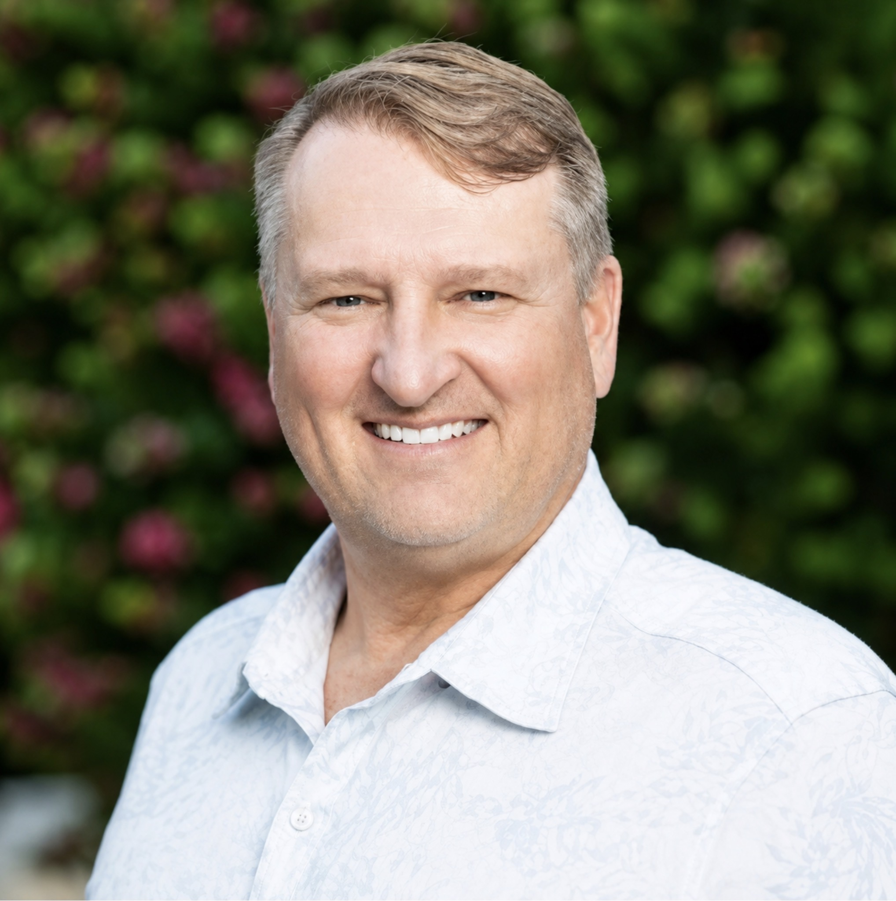
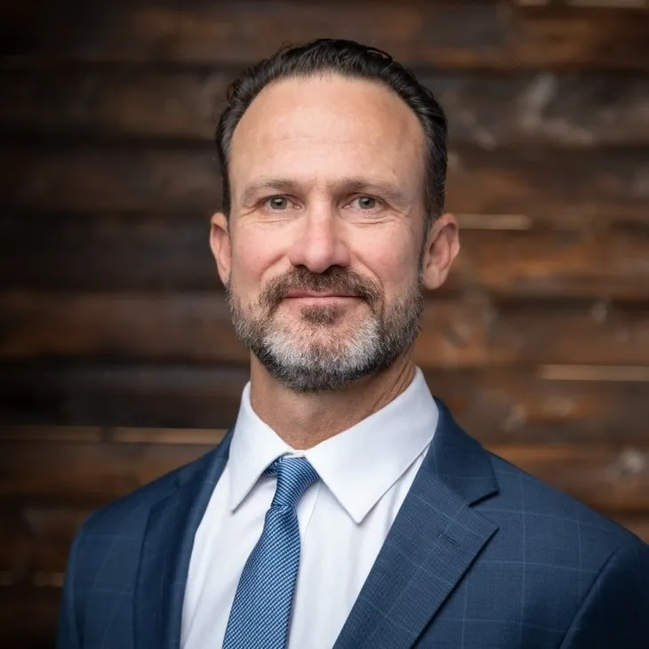
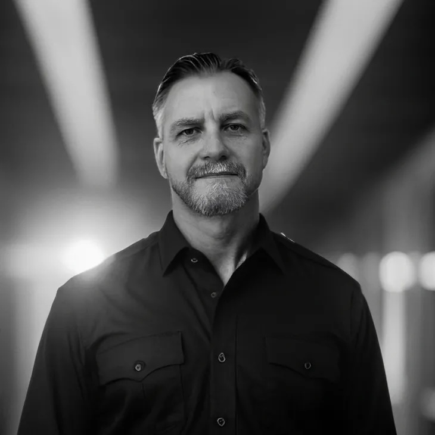
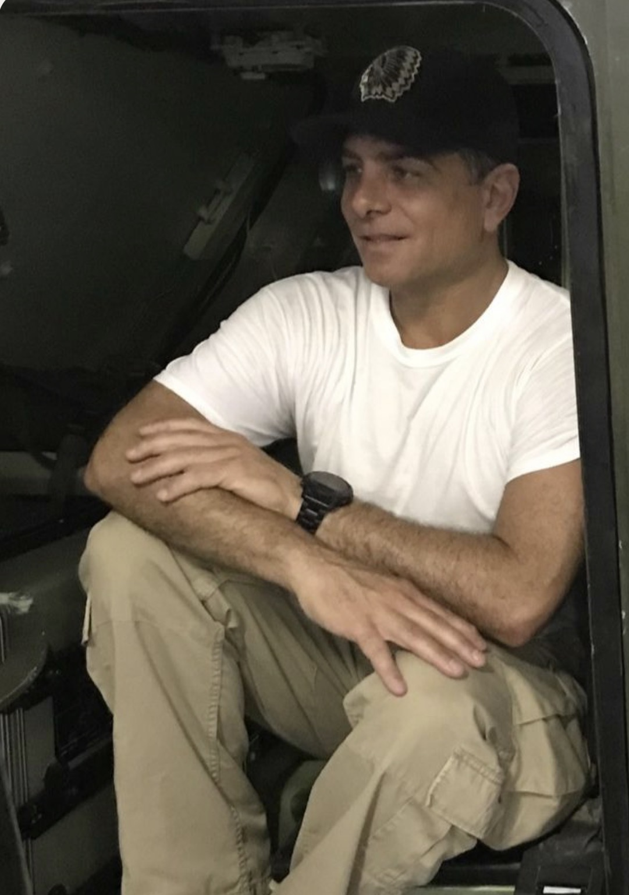

Bob Smith
Founding Partner | Principal & CEO, Adobe Capital Partners and Infrastructure X
A 30-year energy, infrastructure, and capital markets executive, Bob brings deep expertise in private equity, venture capital, deal structuring, and complex transactions. He previously served as EVP, General Counsel, and Chief Development Officer of Pinnacle West Capital (NYSE: PNW), and led Columbia Pipeline Group through a $13 billion sale following its double IPO spin-off from NiSource.

Bruce Roberts
Partner | CEO & Founder, Trident Solutions
A retired U.S. Army Lieutenant Colonel with nearly three decades of operational experience spanning logistics, intelligence, infantry, and public relations, Bruce brings rare cross-domain expertise to defense and infrastructure engagements. His final assignments included service as a Special Operations Battalion Commander and Division Assistant Operations Officer.

Nicholas Fowler
Partner | President & Founder, Trident Solutions
An operational leader with more than 20 years of experience across defense, aviation, and humanitarian operations in high-risk and politically sensitive environments, Nicholas has built and led partnerships across government, NGOs, and private ventures in austere conditions worldwide.

John Loudon
Partner
A seasoned strategic advisor with deep experience in international business development, defense, and cross-sector investments. John brings a global network and a proven track record of building high-value partnerships across complex, multi-jurisdictional environments.

Antonio Misuraca
Partner
A globally connected humanitarian leader and civilian private contractor, Antonio brings over two decades of experience mobilizing high-net-worth networks, corporate sponsors, and special operations professionals in support of veterans, disaster relief, and community initiatives worldwide.
Preston Smith
Partner | CIO, Adobe Capital Partners & Principal, Transform Capital Partners
Preston oversees a diversified investment portfolio spanning technology, AI, defense, data centers, healthcare technology, real estate, quantum computing, and advanced energy. With a decade of experience in stock and options trading and a robust real estate portfolio across Arizona, Texas, and North Carolina, he brings a disciplined approach to capital allocation and long-term value creation.